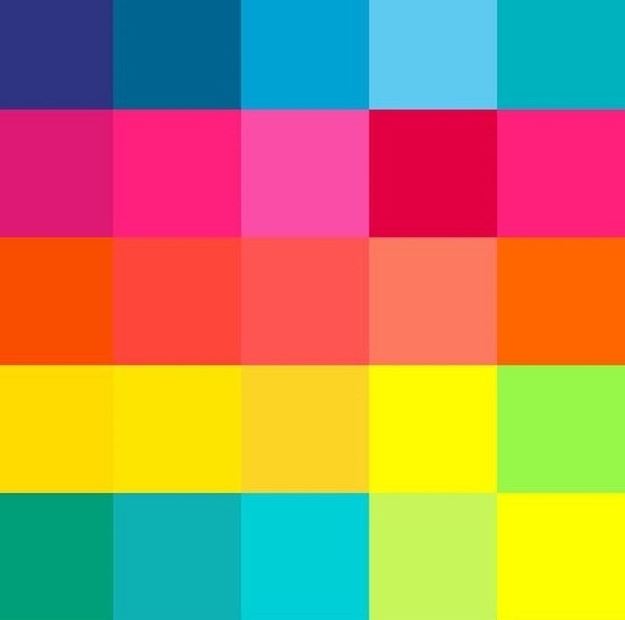

Кроссбраузерность
Сайт дрожен хрошо смотрется на всех браузерных платформах таких как Opera,Yandex,Google,chrome,mocrosoft edge,Safari,Fiefox,Netscape.

Соответствие дизайна
Если сайт верстается по определеному макету дизайнера то он должен быть выполнен со 100%-м сходством и соблюдением шрифтов,цвета,отступов и т.д..

Шрифты
НЕ больше трех шифтов на сайт.Один для заготовков,второй для всех остальных текстов,третий-для выделений важных слов.Должно хватить

Цвета
Обычно на сайте два цвета:ведущий и акцентный. Подобрать удачную цветовую пару можно за счет насмотренности или специальных инструментов.